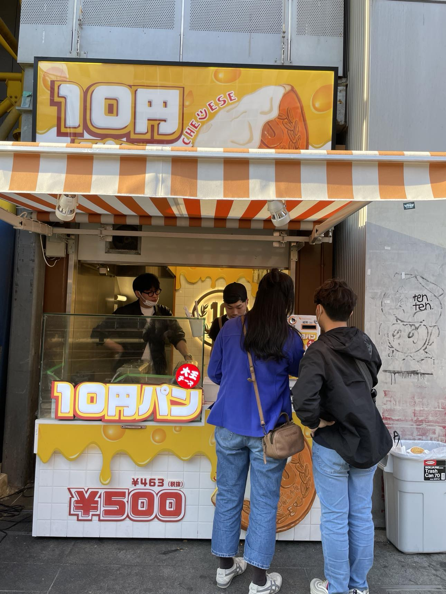

Traveling to Osaka is an unforgettable experience that offers a perfect blend of traditional and modern Japanese culture. As you explore this vibrant city, you'll discover a rich history, renowned culinary delights, and a warm and welcoming atmosphere filled with exciting festivals. Immerse yourself in the bustling street food scene at Dotonbori!
